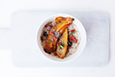
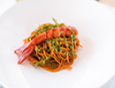
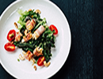
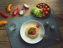
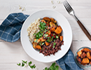
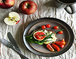
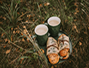

<!DOCTYPE html>
<html lang="ko">

<head>
	<meta charset="UTF-8">
	<title>attr 메소드</title>
	<script src="js/jquery-3.3.1.min.js"></script>
	<script src="js/jquery-ui.min.js"></script>
	<script src="js/script.js"></script>
</head>
	<style>
/*
		*{margin: 0; padding: 0;}
		body {background-color: #adadad }
		.container  {width: 1200px; margin: 20px auto;}
		.navi {width: 300px; float: left;}
		.navi li {list-style: none; width: 150px; height: 120px; float: left;}
		.navi li img {border: 3px solid #000}
		.main {width: 800px; float: right;}
		.main img {position: absolute; border: 3px solid red;}
*/
/*
		a {text-decoration: none; color: inherit;}
		body {margin: 50px auto; text-align: center;}
		h1 {margin-bottom: 20px}
		.btn floa{}
		.btn a {
			display: inline-block;
			background-color: gray;
			color: #fff;
			margin: 0 2px;
			font-size: 0px;
			width: 10px;
			height: 10px;
			border-radius: 50%;
		}
		img {width: 500px; height: auto;}
*/
		
		
	</style>
<body>


<!--작은이미지 클릭시 오른쪽 큰 이미지가 바뀌는 메소드 작업-->
<!--
	<div class="container">
		<div class="navi">
			<ul>
				<li><a href="img/img01_b.png"></a></li>
				<li><a href="img/img02_b.png"></a></li>
				<li><a href="img/img03_b.png"></a></li>
				<li><a href="img/img04_b.png"></a></li>
				<li><a href="img/img05_b.png"></a></li>
				<li><a href="img/img06_b.png"></a></li>
				<li><a href="img/img07_b.png"></a></li>
				<li><a href="img/img08_b.png"></a></li>
			</ul>
		</div>
		<div class="main">
			
		</div>
	</div>
-->


<!--	<h1>attr메소드는 속성을 변경하는 구문</h1>-->
	<script>
//		$(document).ready(function(){
//			$('a:eq(0)').on('click', function(){
//				var img = $('img').attr('src');
//				alert(img);
//			});
//			$('a:eq(1)').on('click', function(){
//				$('img').attr({
//					'src':'img/banner02.png',
//					'alt':'배너2'
//				})
//			});
//			$('a:eq(2)').on('click', function(){
//				$('img').attr({
//					'src':'img/banner03.png',
//					'alt':'배너3'
//			})
//		})
//	});
		
		
//<!--작은이미지 클릭시 오른쪽 큰 이미지가 바뀌는 메소드 작업-->		
//			$(function(){
//			$('.navi a').on('click', function(){
////				before은 선택된요소 앞에 삽입되는
//				$('.main img').before("");
//				$('.main img:last').fadeOut('fast', function(){
//					 $(this).remove();
//				});
//				return false;
//			});
//	});
		
	</script>
</body>

</html>